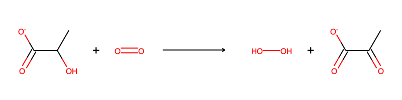
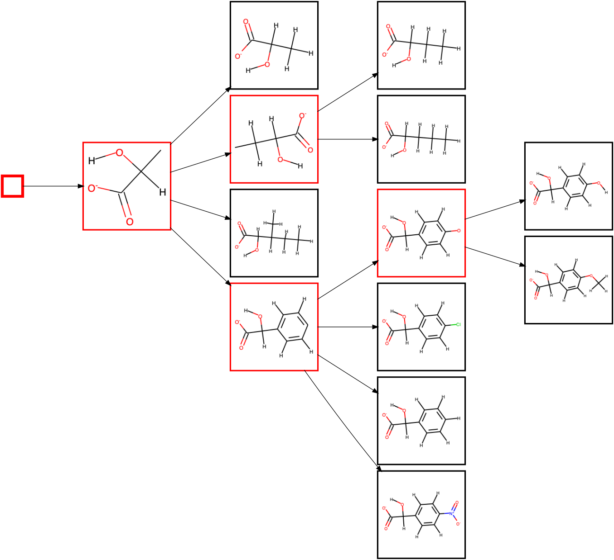
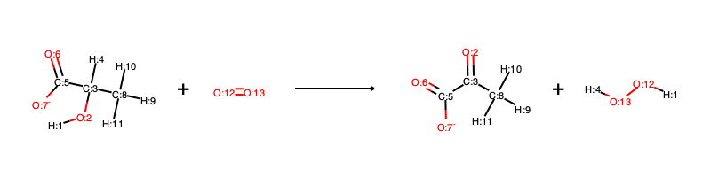
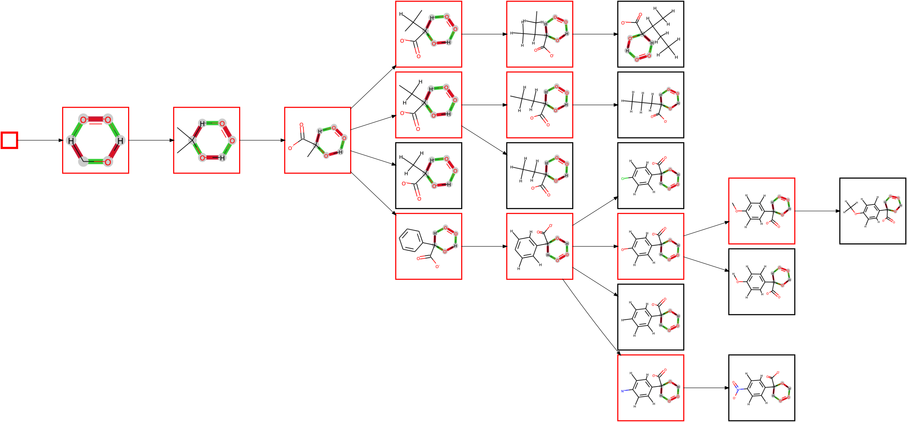
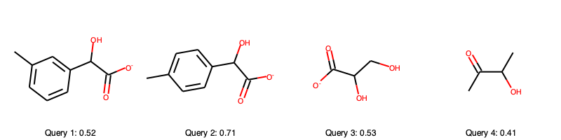
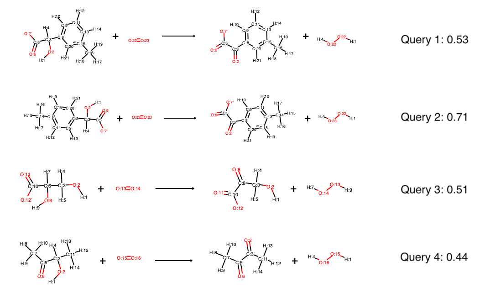
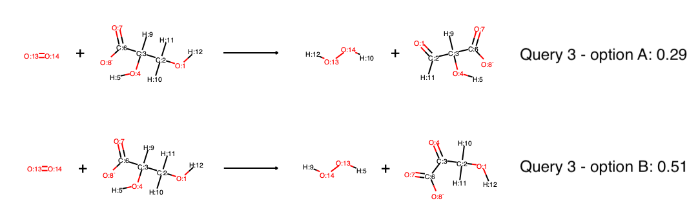

Getting Started¶
This page details how to get started with ehreact.
Requirements¶
Ehreact uses Python 3.6+ and a number of python packages, see Installation for a detailed installation instruction and list of dependencies. We assume you have Conda on your system. If this is not the case yet, install Miniconda from https://conda.io/miniconda.html. However, Conda is optional and you may choose to install packages otherwise.
Installation¶
To install ehreact, make a new conda environment via:
conda env create -f environment.yml
conda activate ehreact
pip install -e .
(Note: If you have an old version of conda (< conda 4.4), the second command is source activate ehreact). The environment
simply contains python, numpy, rdkit, and typed-argument-parser. If you do not like to use conda, you can instead install these
packages yourself, and then run pip install -e ..
To check your installation, try to import ehreact in a Python session:
import ehreact
Installation of optional packages¶
If you want to automatically atom-map reactions, download ReactionDecoder from Github (tested with rdt-2.4.1-jar-with-dependencies.jar), put the jar file into the folder ReactionDecoder (within the ehreact package folder) and rename the file to ReactionDecoder.jar This is optional, and you can run EHreact without ReactionDecoder.
Plotting Hasse diagrams relies on dot (install for example graphviz) and rsvg-convert. If you do not have these packages on your system already, you can install both via homebrew on Macos:
brew install graphviz
brew install librsvg
or via apt-get on Linux (Ubuntu, Debian):
sudo apt-get install graphviz
sudo apt-get install librsvg2-bin
There are other options to install, too. Installing dot and rsvg-convert is optional, and you can run EHreact without both, but will not be able to plot diagrams to an image.
Tutorial¶
After installing ehreact, you are ready to calculate, plot and score a few Hasse diagrams. We will use the enzyme class L-lactate oxidase (EC. 1.1.3.2) as an example, with reactions taken from BRENDA after removing stereochemistry. Exemplary data files can be found in ehreact/data/.
Lactate oxidase can oxidize lactate using oxygen:
{kind=link}
We will use nine known substrates for L-lactate oxidase to construct extended Hasse diagrams, and later also score some new putative reactions:
C1=CC=C(C=C1)C(C(=O)[O-])O
CCC(C(=O)[O-])O
OC(C([O-])=O)c1ccc(Cl)cc1
C1=CC(=CC=C1C(C(=O)[O-])O)O
COc1ccc(cc1)C(O)C([O-])=O
OC(C([O-])=O)c1ccc(cc1)[N+]([O-])=O
CCCC(C(=O)[O-])O
CCC(C)C(C(=O)[O-])O
CC(C(=O)[O-])O
{kind=link}
Creating diagrams from the command line¶
First, let’s use ehreact from the command line:
python train.py --data_path ehreact/data/molecule_training.dat --save_plot test.png --train_mode single_reactant --seed "C([H])O[H]" --no_props
where we have specified the path to read a list of smiles strings via --data_path ehreact/data/molecule_training.dat, process them in single reactant mode (--train_mode single_reactant with C([H])O[H] as seed via --seed "C([H])O[H]") and
have requested to plot the diagram via --save_plot test.png. Since we are only interested in looking at the created diagram currently, we have ommitted the calculation of a number of properties for each node in the diagram (--no_props) to speed up the diagram creation. The execution of the command should produce a PNG image test.png:
{kind=link}
Substructures/fragments are shown in red, and full molecules in black (which are always leaf nodes). The first node is the seed itself. Since the alcohol is always secondary in the known substrates of L-lactate oxidase, the next node shows the rule extended to include the two neighbouring carbon atoms. There are now two possible atoms to extend the rule further, but only of of them, namely adding the oxygens of the carboxylate group, is applicable to all substrates, so that this extension is made first. The diagram then splits up in branches as it extends the rule at the other carbon atom, with either only hydrogens attached, a linear chain, a branched chain or an aromatic ring.
You can also plot a condensed diagram, showing only those substructures which are followed by branching or a leaf node (ommiting all red nodes connected to a single other red node) via the --plot_only_branches command:
python train.py --data_path ehreact/data/molecule_training.dat --save_plot test.png --train_mode single_reactant --seed "C([H])O[H]" --no_props --plot_only_branches
which creates a condensed diagram, that can be handy if viewing very large systems:
{kind=link}
The --plot_only_branches command only influences the plotted diagram, and does not change the Hasse diagram saved to file in any way.
Running EHreact in single_reactant mode only enables a limited set of evaluating and scoring new reactions later on, so it is usually advisable to provide full reactions instead of only the reactants. If atom-mapped reactions are available (including hydrogens), they can be used as direct input to EHreact. An example file is given in ehreact/data/reaction_training.dat for L-lactate oxidase. An exemplary line reads:
[H:1][O:2][C:3]([H:4])([C:5](=[O:6])[O-:7])[C:8]([H:9])([H:10])[H:11].[O:12]=[O:13]>>[O:2]=[C:3]([C:5](=[O:6])[O-:7])[C:8]([H:9])([H:10])[H:11].[H:1][O:12][O:13][H:4]
and visually corresponds to:
{kind=link}
We can now run EHreact in transition_state mode:
python train.py --data_path ehreact/data/reaction_training.dat --save_plot test.png --train_mode transition_state --no_props
where we do not need to provide a seed, since the seed is automatically extracted as the reaction center (all atoms undergoing changes). The plotted diagram now depicts the transition states for each reaction rule, where bonds colored in red reduce their bond order upon reaction, and bonds colored in green increase their bond order upon reaction. Atoms colored in gray are part of the reaction center. Atoms can also be colored in red or green if they change their formal charge upon reaction (not shown).
{kind=link}
If there are no atom-mappings available for the reactions of interest, EHreact can create them via the ReactionDecoderTool. For example:
python train.py --data_path ehreact/data/reaction_unmapped_training.dat --save_plot test.png --train_mode transition_state --no_props --compute_aam
will produce the same diagram (albeit somewhat slower due to the computation of the atom-mapping). If you use this functionality, please cite RDT as:
SA Rahman, G Torrance, L Baldacci, SM Cuesta, F Fenninger, N Gopal, S Choudhary,JW May, GL Holliday, C Steinbeck and JM Thornton: Reaction Decoder Tool (RDT):Extracting Features from Chemical Reactions, Bioinformatics (2016)
On a minor note: No atom-mapping algorithm is perfect, make sure to always check whether the outputted mappings are correct. Use the --verbose option to see the computed mappings.
Creating diagrams within a python script¶
You can also use EHreact within a python script. For example, open up a python session (for example, an interactive session via iPython or a Jupyter Notebook) and run:
import ehreact
from ehreact.train import calculate_diagram
smiles=["O=CCO","O=CCC","O=CC"]
d=calculate_diagram(smiles,train_mode='single_reactant',seed=['C=O'],no_props=True)
print(d.nodes)
print(vars(d.nodes["C=O"]))
This will print the name of all nodes:
{'': root,
'C=O': C=O,
'[H]C(C)=O': [H]C(C)=O,
'CC=O': CC=O,
'[H]C(=O)C([H])([H])C': [H]C(=O)C([H])([H])C,
'CCC=O': CCC=O,
'[H]C(=O)C([H])([H])O': [H]C(=O)C([H])([H])O,
'O=CCO': O=CCO}
And the variables associated with the node “C=O” (we printed only assorted lines in the following, the true output is longer!):
{'edges_to_child': [C=O---[H]C(C)=O],
'edges_to_parent': [root---C=O],
'key': 'C=O',
'is_leaf': False,
'rule': <rdkit.Chem.rdchem.Mol at 0x7f9749d259e0>
# [... lines ommitted here...]
}
Where we can see that the node C=O has exactly one child node, [[H]C(C)=O], and root as parent node, i.e. it is the first real node in the diagram. It is not a leaf node, the respective substructure/rule is saved in ‘rule’ as an RDKit molecule object, and most of the other fields correspond to the default values, since we produced the diagram with --no_props, and thus omitted to fill additional information into the diagram. You can rerun the diagram creation with all information:
d=calculate_diagram(smiles,train_mode='single_reactant',seed=['C=O'])
print(vars(d.nodes["C=O"]))
which adds some more information to the diagram (for example all_leafs now lists all leaf nodes further down that node, min_dist_leaf describes the number of edges to the clostest leaf node and diversity holds the average similarity and its standard deviation between all leaf nodes. Inspecting a leaf node, such as O=CCO reveals futher information, for example a precalculated fingerprints. All these precomputed values are used for scoring a new reaction. Many of the other fields which are still showing their default values are needed for diagrams in transition_state mode. If we provide reactions instead of molecules in the smiles list, we can rerun the calculation in transition_state mode:
smiles=["O=CCO.OO>>OCCO.O=O","O=CCC.OO>>OCCC.O=O","O=CC.OO>>OCC.O=O"]
d=calculate_diagram(smiles,train_mode='transition_state',compute_aam=True)
where we have enabled automated atom-mapping since the inputted reactions are not atom-mapped. Note that reactions MUST be balanced, including hydrogen atoms. Explore some of the nodes and their values!
Scoring new reactions from the command line¶
A precomputed Hasse diagram can be utilized to score new, putative reactions by calculating their similarity to known reactions, but also the topology of the Hasse diagram, which introduces a penalty if important common substructures are missing. Let us calculate a Hasse diagram in single reactant mode and save it to disk:
python train.py --data_path ehreact/data/molecule_training.dat --save_path test_single_reactant.pkl --train_mode single_reactant --seed "C([H])O[H]"
The query substrates:
c1c(C)cc(cc1)C(O)C([O-])=O
Cc1ccc(cc1)C(O)C([O-])=O
C(C(C(=O)[O-])O)O
C(C(C(=O)C)O)
can then be loaded from file, and scored via:
python predict.py --test_path ehreact/data/molecule_test.dat --load_path test_single_reactant.pkl --predict_mode single_reactant
Let us explore the query substrates and their scores
{kind=link}
Upon comparison with the single reactant Hasse diagram
we see that query 2 scores very high because it follows all the patterns we have outline before (hydroxyl group at secondary carbon next to carboxyl group, if an aromatic sidechain is present it is always para-substituted). Furthermore, it is very similar to some of the known substrates. The second best score is achieved by query 3, which has still all of the common substructures (hydroxyl group at secondary carbon next to carboxyl group) but has a lower similarity with the known substrates. Query 1 is rather similar to the known substrates, but is meta-substituted in the aromatic ring, which causes a penalty in the scoring function (the template it fits to in the Hasse diagram has no immediate leaf nodes). Query 4 is missing the carboxyl group, causing a large penalty, too. In fact, query 2 and 3 are known to be processed by lactate oxidase according to BRENDA, the other two were made up for the course of this tutorial, which query 4 being expected to be worse than query 1. The scoring thus depicts our confidence in lactate oxidase being able to oxidize the query substrates quite well.
The exact scoring function is
where \(S_S\) is the maximum Tanimoto similarity of Morgan fingerprints (radius 2, no features) between the query substrate and the known substrates within the current branch. \(S_P\) is the average Tanimoto similarity between all pairs of substrates in the template tree, capped at 0.8. \(S_M\) is the mean Tanimoto similarity between the query and all known substrates (within the whole tree, not only the current branch). \(S_S\), \(S_P\) and \(S_M\) are calculated on the reactants in single substrate mode, or averaged over reactants and products in transition state mode. \(S_L\) scores the position of the highest applicable template within the tree by counting the minimum number of edges to the closest leaf node capped at 5, minus 1 so that it equals zero in the ideal case of only one edge to the closest leaf node. The coefficients 1, -1, 1 and -0.1 are easily customizable in EHreact (see later in this tutorial).
In transition state mode, we can likewise create a Hasse diagram, save it to file and then score the oxidation reactions of the four query substrates:
python train.py --data_path ehreact/data/reaction_training.dat --save_path test_transition_state.pkl --train_mode transition_state
python predict.py --test_path ehreact/data/reaction_test.dat --load_path test_transition_state.pkl --predict_mode transition_state
The scores are quite similar to the scores in single reactant mode, in fact, the main difference is that both reactants and products contribute to the similarity scores, instead of just reactants in single reactant mode:
{kind=link}
If the Hasse diagram was produced in transition state mode, it can furthermore be queried by single substrates, as well as multiple substrates and automatically suggest cosubstrates and possible products. For example, if queried by the four substrates (not full reactions) via:
python predict.py --test_path ehreact/data/molecule_test.dat --load_path test_transition_state.pkl --predict_mode single_reactant
the proposed reactions all contain the missing reaction partner, oxygen, and there are six possible reactions, where query 3 produces three possible reactions (oxidation at two different positions, one of them producing different stereocenters). Currently, single reactant and multi reactant mode on transition state diagrams do not support stereoinformation, so that the two different solutions based on stereocenters are the same. This will be updated in the future. However, predicting full reactions (transition state mode) supports stereoinformation, as well as single reactant mode if the diagram was produced in single reactant mode, also. The scores of query 3 reveal the regioselectivity of the reaction:
{kind=link}
Although there are two hydroxyl groups which in principle could be oxidized, one receives a much higher score than the other, indicating that most likely only Option B will occur. If only the proposal of different reaction outcomes is of interest, not the proposal of reaction partners (here, oxygen), you can obtain the same results by running in multi-substrate mode, where the input is all reactants (substrates and oxygen) and all possible products are created and scored:
python predict.py --test_path ehreact/data/multi_molecule_test.dat --load_path test_transition_state.pkl --predict_mode multi_reactant
Note that if any cosubstrate were missing in multi-substrate mode, no reactions would be created. Try to load ehreact/data/molecule_test.dat instead of ehreact/data/multi_molecule_test.dat to observe this behavior.
Scoring new reactions within a python script¶
Within a python script, you can easily score a query:
import ehreact
from ehreact.train import calculate_diagram
from ehreact.predict import make_prediction
smiles=["O=CCO","O=CCC","O=CC"]
d=calculate_diagram(smiles,train_mode='single_reactant',seed=['C=O'])
test_smi=['O=CCCC','O=CCCCC']
scores,_,_,_,_=make_prediction(smiles=test_smi,d=d,predict_mode="single_reactant")
print(scores)
Which produces the scores:
[0.5166604229104229, 0.43269129597254596]
The output of make_prediction() includes information beyond the scores, too, namely the reaction partner, reaction smiles, the original input smiles it belongs to, and the raw scores, which is especially helpful if the diagram was created in transition state mode. For example, explore:
import ehreact
from ehreact.train import calculate_diagram
from ehreact.predict import make_prediction
smiles=["O=CCO.OO>>OCCO.O=O","O=CCC.OO>OCCC.O=O","O=CC.OO>OCC.O=O"]
d=calculate_diagram(smiles,train_mode='transition_state',compute_aam=True)
test_smi=['O=CCCC','O=CCCCC']
scores,combination,current_smiles,belongs_to,raw_scores=make_prediction(smiles=test_smi,d=d,predict_mode="single_reactant")
print(scores)
print(combination)
print(current_smiles)
print(belongs_to)
print(raw_scores)
where combination specifies the added reaction partners, current_smiles the atom-mapped reaction SMILES, belongs_to a list of indices which reaction belongs to which input (which is important if multiple reactions are created for one input), as well as a dictionary of raw metrics.
Changing the scoring function¶
You can change the scoring function via specifying the params argument:
import ehreact
from ehreact.train import calculate_diagram
from ehreact.predict import make_prediction
smiles=["O=CCO","O=CCC","O=CC"]
d=calculate_diagram(smiles,train_mode='single_reactant',seed=['C=O'])
test_smi=['O=CCCC','O=CCCCC']
params={"use_prod": True,"coeff_ss": 1.0,"coeff_sp": -1.0,"coeff_sm": 0.5,"coeff_sl": -0.1,"cap_sp": 0.8,"cap_sl": 5.0}
scores,_,_,_,_=make_prediction(smiles=test_smi,d=d,params=params,predict_mode="single_reactant")
print(scores)
Which produces the scores:
[0.4251425657675657, 0.36230645800958294]
On the command line, you can read in a json file of params via the keyword --hyper_params <path to json file>, with an example json file
available at ehreact/data/hyperparams_example.json.